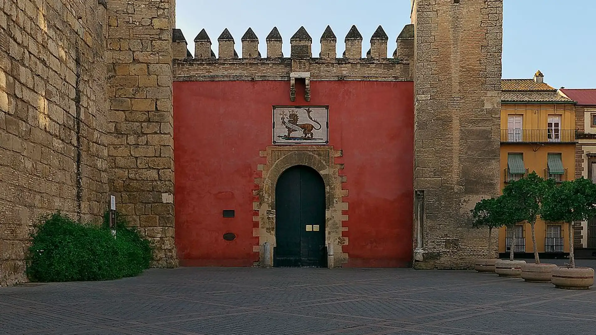

- 


Monumentos de Sevilla
- La Catedral de Sevilla y La giralda
- El Real Alcázar
- La Plaza de España
- La Maestranza
- La Torre del Oro
- Puente de Triana
- La seta
- Torre Sevilla
- El Archivo de Indias
- Hospital de los Venerables
- Hospital de la Caridad
- Museo Arqueologico
- Museo de Artes y Costumbres
- Monasterio de la Cartuja
- Centro Andaluz y de Arte
- Antiquarium
- Ayuntamiento
- Palacio de Dueñas
- Casa Salinas
- Palacio de los Marqueses de la Algaba
- Museo de Bellas Artes
- Casa Fabiola Museo Bellver
- Museo Baile Flamenco
- Museo Militar
- Pabellon de la Navegación
- Acuario
- Casa de la Ciencia
- Espacio Nao Victoria
- Espacio Santa Clara
- Centro ceramica Santa Ana
Real Alcázar
A escasos metros de la Catedral, podrás ver las murallas tras las cuales se extiende el Real Alcázar de Sevilla: un palacio de palacios, un conjunto único en el mundo. Desde la Alta Edad Media este recinto amurallado ha servido de residencia para reyes de diferentes épocas, dejando en cada caso su legado arquitectónico. E incluso hoy es residencia oficial en Sevilla de los Reyes de España, lo que convierte a este espacio fortificado en el palacio real en activo más antiguo de Europa. La proliferación de detalles increíbles, la historia que se respira en cada sala, sus jardines de ensueño… todo ello hace de este conjunto palaciego una ciudadela casi irreal que te evade del tiempo presente. El mundo del cine en múltiples ocasiones, o series como Juego de Tronos , ya se han rendido a sus encantos.
 DIRECCION Y DATOS DE CONTACTO
DIRECCION Y DATOS DE CONTACTO
Direccion: Patio de Banderas, s/n.
41004 Sevilla (Andalucía)
E-mail: alcazar@patronato-alcazarsevilla.es
Tlf: +34 955 010 010